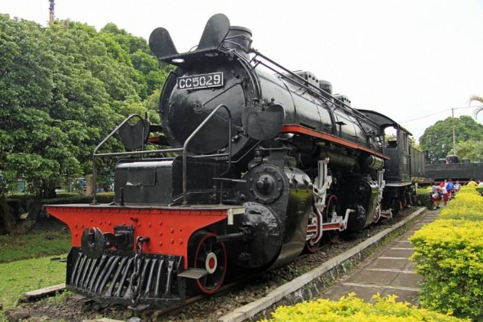

Transportasi yang mengubah arus ekonomi dan mobilitas -- Latihan HTML & CSS
Kereta api pertama kali hadir di Nusantara pada masa kolonial sebagai sarana mengangkut barang dan penumpang antar daerah produksi dan pelabuhan. Rel lereta menjadi infrastruktur penting dalam ekspansi ekonomi kolonial.
Pembangunan jaringan rel pada abad ke-19 membuka akses baru bagi komoditas seperti kopi, gula, dan kayu. Serta mempermudah mobilitas penduduk. Pendirian perusahaan kereta api swasta dan negara ikut membentuk lanskap transportasi.
Setelah kemerdekaan, kereta api menjadi bagian dari upaya membangun kembali negara, menghubungan wilayah-wilayah yang sebelumnya terisolasi, dan mendukung pembangunan ekonomi nasiional.
Perkembangan modern termasuk elektrifikasi jalur, perbaikan prasarana, dan pengoperasian kereta cepat di beberapa koridor. Kereta jarak jauh maupun commuter rail memainkan peran penting dalam mengurangi kemacetan kota.
Perubahan teknologi juga membawa aspek keselamatan yang lebih baik seperti sinyal elektronik, perawatan rel berbasis data, dan sistem kendali lalu lintas yang canggih. Investasi infrastruktur terus mendukung peningkatan kapasitas.
Dalam kajian sosial, kereta api mempengaruhi perkembangan kota, penataan ruang, dan pola pemukiman, Stasiun sering menjadi pusat aktivitas ekonomi dan budaya setempat.
Tantangan saat ini meliputi pembiayaan, pemeliharaan aset, serta kebutuhan peningkatan layanan untuk memenuhi pertumbuhan permintaan angkutan massal.
Dengan perencanaan yang matang, kereta api tetap menjadi tulang punggung transportasi publik yang berkontribusi pada mobilitas berkelanjutan dan pertumbuha ekonomi.
Gunakan file ini sebagi marei latihan: tambahkan links, ubah warna, dan edit struktur sesuai tugas kelas.